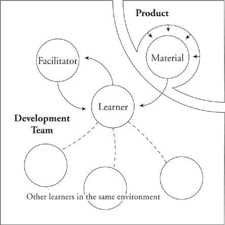

Why Teams Matter
Teams of knowledge workers are something of a puzzle. Almost all the real work undertaken by the team ends up being done by individuals working apart, little done in true team mode. Why, then, is the team so important? Why do well-jelled teams of knowledge workers perform so much better than nonteams?
Part of the reason is that the team helps align goals, helps to keep all members pulling in the same direction. It also satisfies some of the individual’s need for community. These are nontrivial advantages that go a long way to explaining the demonstrated advantages of teamwork in knowledge activities.
Now add to this the elaborate learning environment that the team supplies. When you learn within the context of a team, you have a facilitator: another team member who is advanced somewhat ahead of you in the subject. This is your coach. You have material: a comfortably doable piece of project work that has been carved off for you by your coach to help you master the skill. And you have co-learners: the other team members who are learning at the same time, or who have just been through the experience themselves (and whose faces are still pale). This is a perfect environment for learning what really matters. This is probably the context of most of what you learned early on about your profession.

The team provides an ideal learning environment, a place where coaching and being coached are an integral part of each day’s work.
The idea that teams matter to learning may seem like good news for your organization, since chances are it is highly supportive of teams. That’s fine, but where are those teams? It’s not uncommon to see real teams as a phenomenon of only the bottom level of the hierarchy. When that’s true, you have to wonder: Are we set up to learn only at the bottom level? Do we have teams where learning really matters?